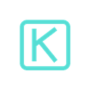

Загрузка мира
Компиляция графических конвейеров...
KERN
ЭКСПЕДИЦИЯ В НЕДРА ПЛАНЕТЫ
ВОЙТИ В МИР KERN
ИЛИ
ВОЙТИ ЧЕРЕЗ VK
Офлайн режим (Dummy)
Пароль протоколом не используется — вход выполняется по токену устройства.
KERN
ЭКСПЕДИЦИЯ В НЕДРА ПЛАНЕТЫ
— БУРОВАЯ УСТАНОВКА // ГОТОВА К СПУСКУ
Мир ждёт
под поверхностью.
Спускайся на неизведанные глубины. Бури породу, автоматизируй дронов, создавай кластеры и выживай в бесконечной шахте.
НАЧАТЬ СПУСК В ШАХТУ
↗
ОБНОВИТЬ
версия
{Name}
Без обновления игра недоступна.
описание от сервера (Description)
ВЫБОР СЕРВЕРА
127.0.0.1:8090
— ФАЗА СПУСКА
Подготавливаем
точку высадки.
Загрузка чанков мира, аудио-банков, шейдеров и текстур поверхности.
Генерация топологии пласта
3 / 5
ОТМЕНИТЬ СПУСК

КАЛИБРОВКА ОБОРУДОВАНИЯ ШАХТЁРА
Рендеринг и освещение
1. ДОСТУПНОСТЬ
2. ГРАФИКА
3. УПРАВЛЕНИЕ
Качество освещения
Каскадный расчёт диффузного света в породе
Высокое
Ограничение частоты кадров
Синхронизация частоты кадров
Без ограничений
Вертикальная синхронизация
Убирает разрыв кадра ценой задержки ввода
← НАЗАД
ПРОПУСТИТЬ
ДАЛЕЕ →